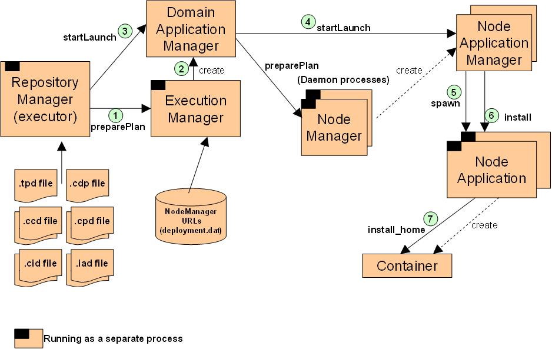
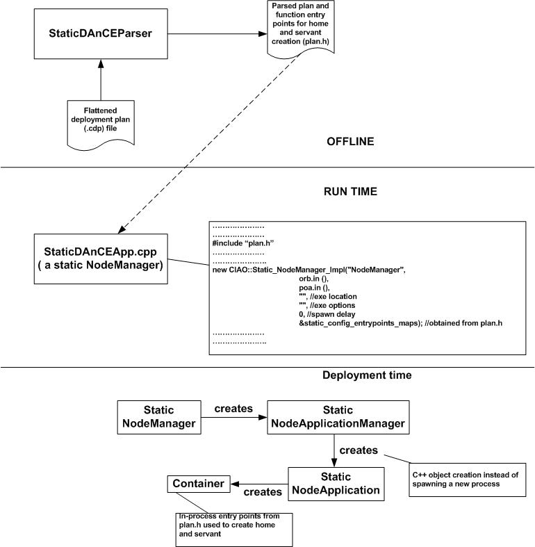
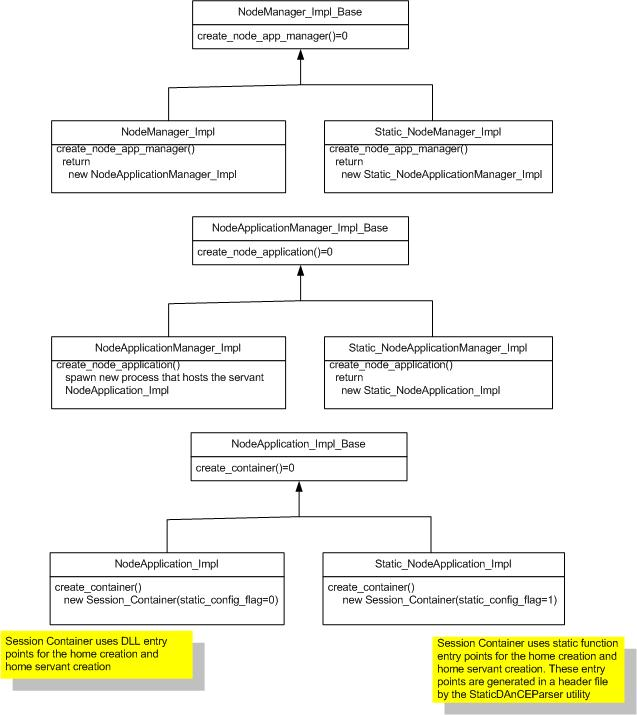

The dynamic packaging, assembly, and deployment mechanisms currently available in CIAO are useful for application domains where component metadata is less likely to be known a priori, where implementation upgrades may need to be performed on-line, and where platform features like loading and unloading dynamic libraries are both available and useful. We have already incorporated static configuration support for component configuration in CIAO on platforms like VxWorks, as a set of optional strategies and optimizations to the existing CIAO configuration capabilities (). In this white paper, we discuss implementation details for extending the static configuration capabilities as part of the new DanCE (D&C support available with CIAO) framework.
The fundamental intuition in understanding our approach is that in DRE systems the stages of the overall system lifecycle are similar to those in more dynamic conventional component-oriented client-server applications.However, in DRE systems several phases of the system lifecycle are compressed into the compile-time and system-initialization phases, so that (1) for testing and verification purposes the set of components in an application can be identified and analyzed before run-time, and (2) overheads for run-time operation following initialization are reduced and made more predictable. Furthermore, due to the nuances of the platforms traditionally used for deploying DRE systems, not all features of conventional platforms are available. Our approach therefore avoids certain mechanisms that are either unavailable or too costly in terms of performance. We follow these intuitions in our approach, taking the existing configuration phases in CIAO and pushing several of them earlier in the configuration lifecycle.

Figure 1. Current D&C process using DAnCE

Figure 2. Static D&C in DAnCE
Figure 2 shows the static configuration approach in DAnCE. Here, the flattened deployment plan (.cdp) is parsed offline by an offline parser ($CIAO_ROOT/StaticConfigurator/StaticDAnCEParser) using the same XML parser classes that the dynamic configuration uses. The output of the parser is a C++ plan.h file, which contains the function entry points for home and home servant creation. The assumption here is that all the necessary (component implementations and other) libraries are statically linked to the driver application (see a template in $CIAO_ROOT/DAnCE/StaticConfigurator/StaticDAnCEApp.cpp.tmpl).
The driver application is essentially a NodeManager which can be used to do deployment just the same as in DAnCE. To achieve maximum reusability of the existing classes in the DAnCE framework, we use the class hierarchy shown in Figure 3.

Figure 3. New class hierarchy to accommodate static configuration
within DAnCE
To run the static version of Hello example, do the following,